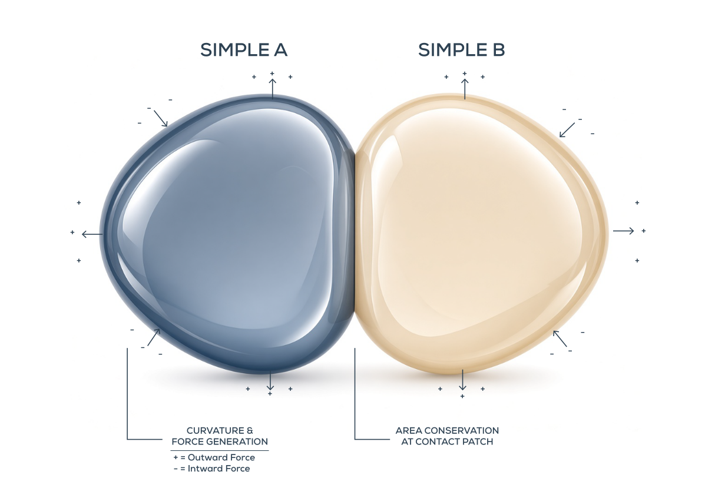
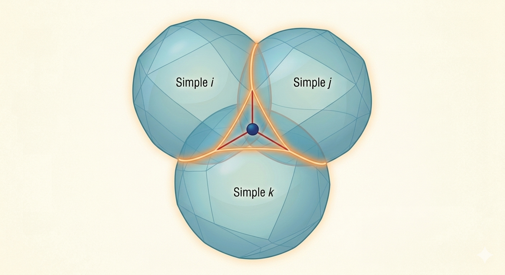

Overview
Simples are the fundamental geometric entities of SimplesModel. Each Simple is represented as a closed, deformable surface embedded in a three-dimensional space. Rather than behaving as rigid bodies, Simples can change their geometric configuration through variational dynamics governed by surface tension and curvature-dependent energy.
When two or more Simples come into contact, their surfaces interact through geometric constraints and variational forces. These interactions can produce local deformations, shared boundaries, and partially merged surface regions. The resulting configurations are not merely spatial arrangements: they constitute the elementary interactions from which the network structure of the model emerges.

When three or more Simples interact, their surfaces can partially merge, producing shared geometric regions. These shared surfaces establish relationships between the participating entities and provide the geometric basis for network formation.
In this representation, a network is not an externally imposed structure connecting independent objects. It emerges from the geometric interactions and shared surface regions of the Simples themselves. Changes in these configurations can therefore modify the topology and connectivity of the resulting network.

The interaction of Simples provides the geometric foundation for the probabilistic and temporal dynamics explored in SimplesModel. Network configurations define possible states, while variations in their geometry determine the conditions under which transitions between states can occur. Through these transitions, the model investigates how higher-order structures and temporal ordering can emerge from local geometric interactions.
The following sections describe the theoretical principles and computational approximations used to implement these mechanisms.